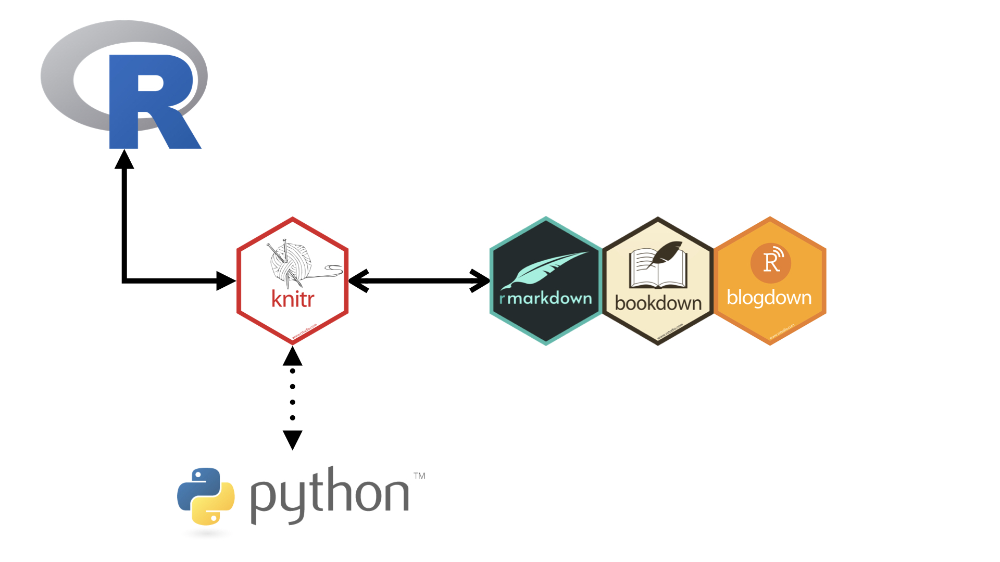
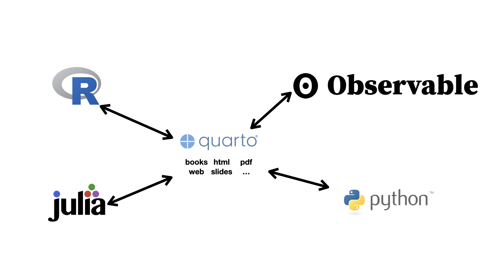
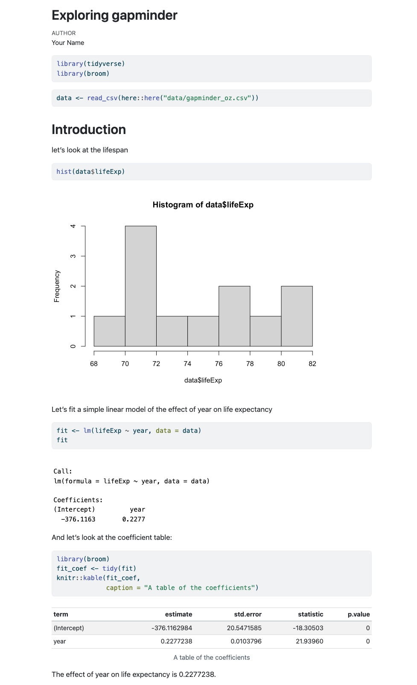
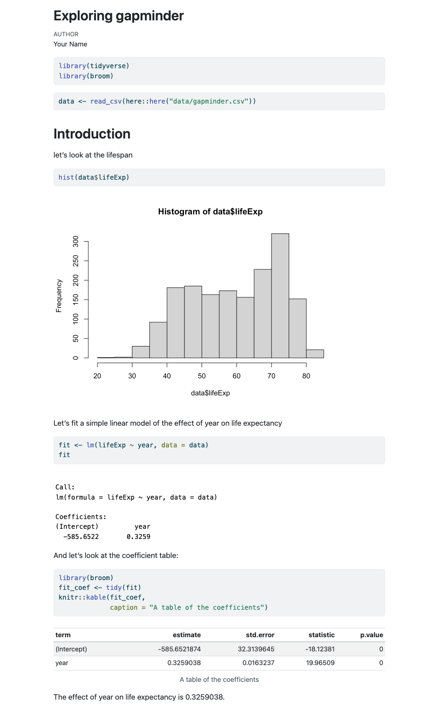

# computer code goes in three back ticks
1 + 1[1] 22 + 2[1] 4image(volcano)
The goal of this section is to briefly discuss why we want to learn Quarto, the benefits, and the barriers to using it.
It is unfortunately a common, seemingly evergreen problem that a lot of people cannot reproduce scientific work. This might appear to be a “current” problem, but it has indeed been a problem throughout a lot of scientific history. To illustrate this, here’s a nice article by Rich FitzJohn, Reproducible research is still a challenge, which was written 10 years ago, in 2014, and provides a list of the challenges and lessons learned in making research reproducible. The list is still relevant. This problem isn’t completely solved. But, we can make it easier to solve, to get further.
Reproducibility isn’t just something that impacts a few people, and it’s not cheap. A 2010 estimate stated that in the biomedical industry, in the USA, irreproducibility (not being able to reproduce a given piece of work) costs $28 Billion dollars annually 1. That was one country, one field, and one year.
So what can we do about it?
The idea of literate programming shines some light on this dark area of science. This is an idea from Donald Knuth where you combine your text with your code output to create a document. This is a blend of your literature (text), and your programming (code), to create something that you can read from top to bottom. Imagine your paper - the introduction, methods, results, discussion, and conclusion, and all the bits of code that make each section. With Quarto, you can see all the pieces of your data analysis all together.
Literate programming was a popular idea, and it has had some interesting discussion and contributions over the years. Notably, in the R ecosystem, the Sweave, (The S language + weaving together text and code) program provided a way to write text and code together. As with any technology, there were some speedbumps with using Sweave, and some of the reasons we are not teaching it now is because:
In 2004, John Gruber, of daring fireball created Markdown, a simple way to create text that rendered into an HTML webpage. The core idea was that you could write plain text (not text inside a MS Word/WordPerfect/Pages/Proprietary Format Document), and it would look readable, then get rendered into HTML.
The idea took off.
- bullet list
- bullet list
- bullet list
1. numbered list
2. numbered list
3. numbered list
__bold__, **bold**, _italic_, *italic*
> quote of something profound
```r
# computer code goes in three back ticks
1 + 1
2 + 2
image(volcano)
```Would be converted to:
bold, bold, italic, italic
quote of something profound
# computer code goes in three back ticks
1 + 1[1] 22 + 2[1] 4image(volcano)
With very little marking up, we can create rich text, that actually resembles the text that we want to see.
Some other nice features of Markdown include:
| Feature | Markdown | rendered | |
|---|---|---|
| superscript | 2^nd^ | 2nd |
|
| subscript | CO~2~ | CO2 |
|
| strikethrough | ~~mistake~~ | |
|
| links | [text](https://quarto.org/) | text |
|
| links | <https://quarto.org/> | https://quarto.org/) |
|
| images |  | (cannot render in a table) |
For more examples and details of using markdown in Quarto, see the official Quarto “Markdown Basics” documentation.
Issues around Sweave led to the development of knitr, and subsequently Rmarkdown, which used the knitr engine. You could run more than R code in rmarkdown, in fact there are over 60 engines available, from awk and bash, to haskell, perl, php, sql, scala, stata, javascript, python, julia, and even C.
However, there are a few points of friction:
Here are some diagrams to illustrate this point:

In rmarkdown, we are working in rmarkdown, and that uses knitr to talk to R and handle the document generation:
But with Quarto, we have this general interface, where Quarto can talk to different programming languages. Not pictured, but the “R engine” is in fact, knitr:

So, how do we combine this with our R code, into a literate programming environment?
Quarto provides an environment where you can write your complete analysis. It weaves your text, and code, and its output together into a single document.
For example, look at the following report:

How did we generate it?
---
title: "Exploring gapminder"
author: "Nicholas Tierney"
format: html
---
```{r}
#| label: library
library(tidyverse)
library(broom)
```
```{r}
#| label: data-read-in
data <- read_csv(here::here("data/oz_gapminder.csv"))
```
# Introduction
let's look at the lifespan
```{r}
#| label: hist-life-exp
hist(data$lifeExp)
```
Let's fit a simple linear model of the effect of year on life expectancy
```{r}
#| label: example-lm
fit <- lm(lifeExp ~ year, data = data)
fit
```
And let's look at the coefficient table:
```{r}
#| label: coef-table
library(broom)
fit_coef <- tidy(fit)
knitr::kable(fit_coef,
caption = "A table of the coefficients")
```
The effect of year on life expectancy is `{r} fit_coef$estimate[2]`.We render this code and it creates this report!
It has a plot, it has a table, we even refer to some of the values in the text - the last line of the report looks at the effect of year.
But what if the data changes? At the moment we are looking at only Australia - say we get the full dataset, what happens then?
Say you’d created your report by hand in microsoft word, and with a graphical user interface software, you would need to:
This is painful.
And what if someone wants to know exactly how you did your analysis?
This process isn’t exactly sharable.
But if you did it in Quarto?
Just update the data, and render the document again, and get an updated document:

The results are updated!
And we just pointed it to some different data. Then re-rendered it.
That’s it.
That is why we use Quarto
In this section we’ve learned about:
The article, Freedman, 2010, Heard via Garret Grolemund’s great talk↩︎